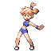
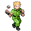
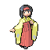
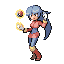
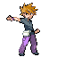
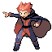

道館與聯盟
關都有 8 座道館，依序挑戰。打敗每位道館館主就能獲得徽章。徽章也會提高寶可夢的等級上限，並解鎖功能（果園、道具交換、交易所）。
擁有 8 枚徽章後，聯盟接待員會讓你進入聯盟會館：依序挑戰四天王，然後是冠軍。
中途落敗或離開嗎？該次挑戰即告作廢，必須從頭再來。請帶夠傷藥！
道館順序
1. 小剛 - 灰色徽章（岩石）
2. 小霞 - 藍色徽章（水）
3. 馬志士 - 橘色徽章（電）
4. 莉佳 - 彩虹徽章（草）
5. 阿桔 - 粉紅徽章（毒）
6. 娜姿 - 金色徽章（超能力）
7. 夏伯 - 深紅徽章（火）
8. 坂木 - 綠色徽章（地面）
 小剛灰色徽章 · 岩石
小剛灰色徽章 · 岩石
小霞藍色徽章 · 水
馬志士橘色徽章 · 電
莉佳彩虹徽章 · 草 阿桔粉紅徽章 · 毒
阿桔粉紅徽章 · 毒
娜姿金色徽章 · 超能力夏伯深紅徽章 · 火坂木綠色徽章 · 地面阿速飛翼徽章 · 飛行阿筆昆蟲徽章 · 蟲小茜常規徽章 · 一般松葉幻影徽章 · 幽靈阿四打擊徽章 · 格鬥阿蜜鋼鐵徽章 · 鋼柳伯冰雪徽章 · 冰小椿升龍徽章 · 龍
關都聯盟關都冠軍
城都聯盟城都冠軍建議最低等級
挑戰前，你最強的寶可夢（隊伍 + 電腦）必須達到此等級；否則道館館主會在對戰前把你拒之門外。
規則
- 每 7 天可再戰一次：隊伍等級提高 5-10，賞金為 50%。
- 伺服器會檢查勝利條件：你最強的寶可夢必須至少達到王牌等級 − 15。